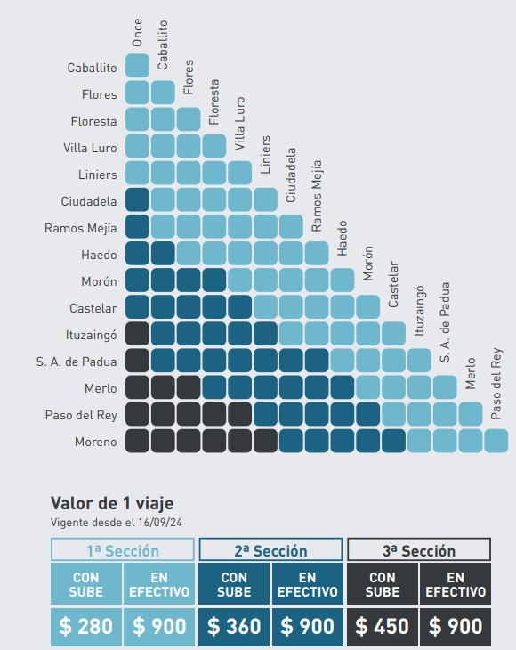

Revisá las tarifas de la Línea Sarmiento y conocé cuánto cuesta tu traslado según la distancia.

Con tarjeta SUBE no registrada abonás el doble de la tarifa correspondiente a cada sección.
Con la Tarifa Social Federal, viajás con un 55% de descuento.
Multa
Pasajero que no acredite haber pagado correctamente, con boleto de fecha vencida o boleto de valor inferior al correspondiente y/o no se ajuste el usuario a las condiciones de su emisión, se le impondrá una multa de: $ 2.800 ARS.